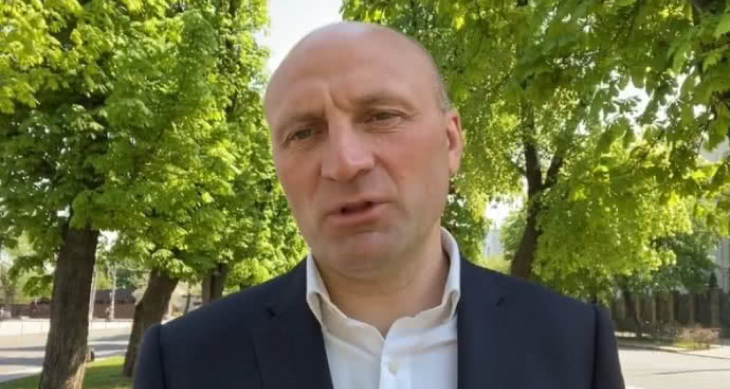

Мер Черкас дорікнув Зеленському через корупцію "слуг народу" й пообіцяв опір
Черкаський міський голова Анатолій Бондаренко звернувся до президента України Володимира Зеленського, він нагадав очільнику держави про корупційні скандали навколо оточення глави держави й застеріг від тиску на місто.
Джерело: відеозвернення Бондаренка у Facebook
Пряма мова: "Пане президенте, я думав, коли ви переможете – в країні буде закон один для всіх… Прийде весна і будемо саджати. Тільки не міських голів, а корупціонерів. Я думав, що ви будете саджати за кнопкодавство, я думав, що ви будете садити своїх соратників за "Велюр"… І ви знаєте, ми готові відповідати, але тільки після ваших однопартійців.
А зараз, як у тому фільмі про Крим: Черкаси будуть чинити опір. Пам’ятайте, Черкаси – вільне козацьке місто, і якщо потрібно об’єднати Україну, ми об’єднаємо Україну. І пам’ятайте – ніхто в житті не здолав Черкаси!"
Деталі: Стосовно "Велюру", мер Черкас мав на увазі елітний ресторан нардепа Миколи Тищенка (фракція "Слуга народу"), який працює попри карантин і його відвідують відомі в політичних колах люди.
Варто зазначити, що у Черкаській області з початку пандемії виявили 304 випадки захворювання на Covid-19, із них 63 людини вже одужали. Це середній показник по Україні. Приміром, у Чернівецькій області коронавірус діагностували вже у 1 745 осіб, у Києві у 1 494-х, а Франківщина та Тернопільщина наближаються до позначки у тисячу хворих.
Усю динаміку пандемії "Українська правда" відслідковує тут.
Деталі: Стосовно "Велюру", мер Черкас мав на увазі елітний ресторан нардепа Миколи Тищенка (фракція "Слуга народу"), який працює попри карантин і його відвідують відомі в політичних колах люди.
Варто зазначити, що у Черкаській області з початку пандемії виявили 304 випадки захворювання на Covid-19, із них 63 людини вже одужали. Це середній показник по Україні. Приміром, у Чернівецькій області коронавірус діагностували вже у 1 745 осіб, у Києві у 1 494-х, а Франківщина та Тернопільщина наближаються до позначки у тисячу хворих. Усю динаміку пандемії "Українська правда" відслідковує тут.
Черкаський міський голова Анатолій Бондаренко звернувся до президента України Володимира Зеленського, він нагадав очільнику держави про корупційні скандали навколо оточення глави держави й застеріг від тиску на місто.
Джерело: відеозвернення Бондаренка у Facebook
Пряма мова: "Пане президенте, я думав, коли ви переможете – в країні буде закон один для всіх… Прийде весна і будемо саджати. Тільки не міських голів, а корупціонерів. Я думав, що ви будете саджати за кнопкодавство, я думав, що ви будете садити своїх соратників за "Велюр"… І ви знаєте, ми готові відповідати, але тільки після ваших однопартійців.
А зараз, як у тому фільмі про Крим: Черкаси будуть чинити опір. Пам’ятайте, Черкаси – вільне козацьке місто, і якщо потрібно об’єднати Україну, ми об’єднаємо Україну. І пам’ятайте – ніхто в житті не здолав Черкаси!"
Залиште коментар